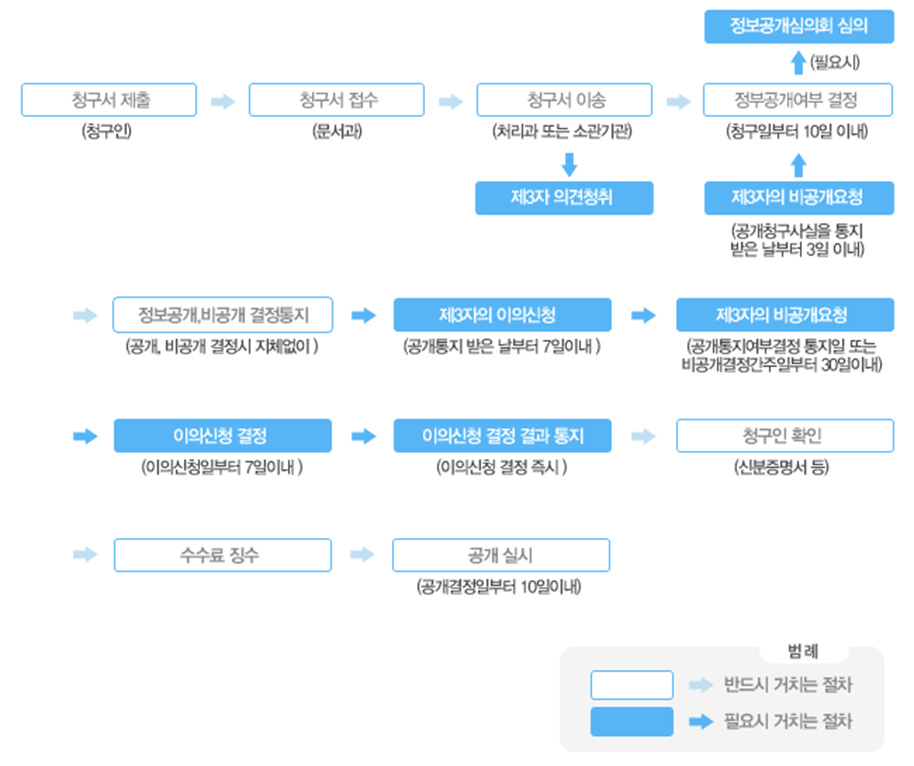

검색 아이콘
사이트맵 아이콘
로그인 아이콘
컨텐츠 영역
정보공개제도
정보공개제도는 국가기관, 지방자치단체, 정부투자기관, 그 밖의 공공기관이 보유 관리하고 있는 정보를 국민의 청구에 의해 공개하거나,
중요 정보를 사전에 국민에게 제공함으로써 국민의 알권리를 보장하고 국정운영에 대한 국민참여와 투명성을 제고시키기 위한 제도적 장치입니다.
정보공개제도파일영역
컨텐츠내용영역
청구권자
모든국민 모든 국민은 청구인 본인 또는 그 대리인을 통하여 공공기관에 정보공개를 청구할 권리를 가지고 있습니다. 법인·단체 법인과 단체의 경우는 대표자의 명의로 공공기관에 정보공개를 청구할 권리를 가지고 있습니다. 외국인 청구권이 인정되는 외국인의 범위는 다음과 같습니다. 국내에 일정한 주소를 두고 거주하는 자/ 학술·연구를 위하여 일시적으로 체류하는 자/ 국내에 사무소를 두고 있는 법인 또는 단체
대상정보
정보공개
청구방법
공공기관이 직무상 작성 또는 취득하여 관리하고 있는 문서·도면·사진·필름·테이프·슬라이드 및 컴퓨터에 의하여 처리되는 매체등에 기록된 사항 대한민국 정보공개 포털(http://www.open.go.kr)을 통해 청구 가능하며, 정보공개 청구서를 작성하여 공사에 출석하여 제출하거나 우편·팩스로 제출할 수 있으며 2인 이상 다수인이 공동으로 정보공개를 청구할 때에는 대표자1인을 선정하여 제출
공개여부결정
공개기한 정보공개 청구를 받은 날부터 휴일을 제외한 10일 이내(부득이한 경우 10일 연장 가능)에 공개여부를 결정 (당일 오후 6시 이후에 접수된 경우 익일부터 기산) 제3자의 의견청취 공개대상 정보가 제3자와 관련이 있는 경우 공개청구된 사실을 제3자에게 통지하고 필요시 의견을 청취 제3자의 비공개요청 공개청구된 사실을 통지받은 제3자는 의견이 있을 경우 통지받은 날부터 3일 이내에 공개하지 아니할 것을 요청할 수 있음. 내부종결처리 정보공개 결정의 통지를 받은 자가 정당한 사유 없이 해당 정보의 공개 청구를 다시 한 경우 정보공개 결정의 통지를 받은 후 내용을 재청구하였을 경우
접수창구
| 본부 | 이름 | 일반전화번호 | 일반팩스 |
|---|---|---|---|
| 본사 | 이상예 | 042-615-3651 | 042-472-3057 |
| 서울본부 | 윤선영 | 02-3149-2140 | 02-361-8400 |
| 수도권광역본부 | 이두수 | 02-2639-3713 | 02-361-8410 |
| 동부지역관리단 | 정예연 | 02-3299-7759 | 02-361-8436 |
| 강원본부 | 백지혜 | 033-520-2233 | 02-361-8446 |
| 대전충청본부 | 김주리 | 042-259-2130 | 02-361-8454 |
| 충북지역관리단 | 이인영 | 043-641-2399 | 02-361-8464 |
| 광주전남본부 | 박홍식 | 061-749-2138 | 02-361-8493 |
| 광주지역관리단 | 이하연 | 063-850-2232 | 063-850-2243 |
| 전북본부 | 구영미 | 063-850-2232 | 063-850-2243 |
| 대구경북본부 | 문소희 | 053-940-2143 | 02-361-8509 |
| 대구지역관리단 | 황윤선 | 053-940-2179 | 053-940-2156 |
| 부산경남본부 | 윤빛나 | 051-440-2973 | 02-361-2813 |
정보공개절차
불복구제절차
이의신청
신청권자 공공기관의 비공개처분 또는 부작위로 법률상 이익을 침해받은 청구인 공공기관이 제3자의 의사에 반하여 정보를 공개한 경우의 제3자 신청기간 공개여부 결정통지를 받은 날 또는 비공개의 결정이 있는 것으로 보는 날부터 '30일'이내 제3자의 경우 공개통지를 받은 날부터 '7일'이내 신청방법 정보공개(비공개)결정 이의신청서를 작성하여 당해 처분기관에 신청 이의신청 결정 및 통지 접수일부터'7일'이내에 수용여부 결정, 서면으로 통지
행정심판 청구
행정소송
청구권자 공공기곤의 처분 또는 부작위로 법률상 이익을 침해받은 청구인 청구기간 및 방법 처분이'있음을 안날'부터 90일, '있는 날'부터 180일 이내 제기 심판청구서를 재결청 또는 피청구인인 행정청에 제출 재결청은 원칙적으로 당해 행정청의 [직근상급행정기관]이 되며, 예외적으로 당해 행정청 또는 소관감독행정 기관이 됨 재결기간 및 통보 심판청구를 받은 날부터 60일이내(부득이한 경우 30일 범위안에서 연장 가능)에 재결하여 '재결서'통지 재소권자 공공기관의 처분 또는 부작위로 법률상 이익을 침해받은 청구인 제소기 처분 등이 '있음을 안날'부터 90일, '있는 날'부터 1년 이내